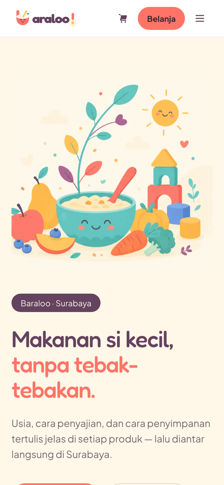
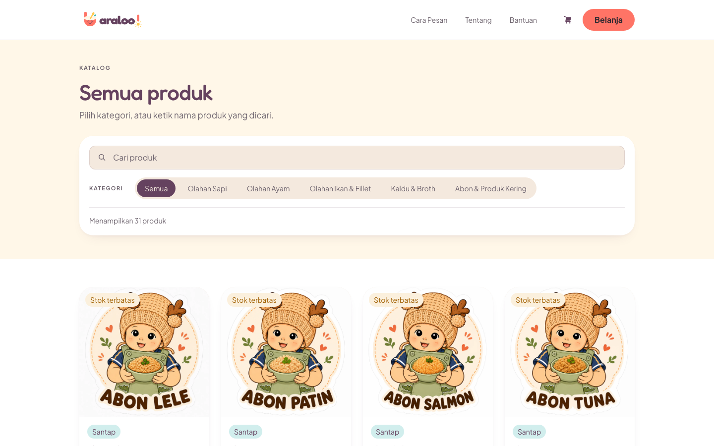
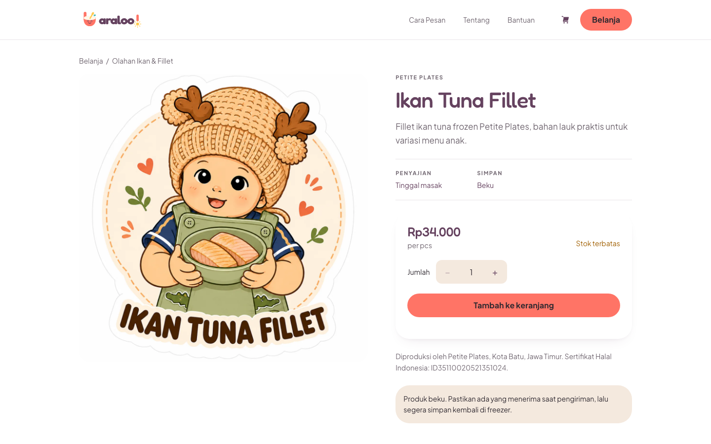

Baraloo — an online store for baby food in Surabaya
A Surabaya reseller of Petite Plates MPASI (home-made baby food) needed an online store. I built them a storefront where parents can see exactly what each product is — serving, storage, producer — and order in a few taps, plus an admin panel the team installs on their phones as an app (PWA) to run the shop.
What shoppers see first


What the store had to do
- Browse without asking31 products in 5 categories, with price and stock status shown up front.
- No guessworkEvery product states serving method and storage, plus producer and halal certification.
- Order in a few tapsCart and checkout, confirmed over WhatsApp, delivered in Surabaya.
- Run the shop from a phoneThe admin panel is a PWA the team installs on their phones to manage products and orders — kept off the public internet and reachable only over a private Tailscale network.
- Policies answered up frontOrdering, payment, delivery and returns pages that customers can read on their own.
- Responsive storefrontA regular website that adapts from desktop down to a phone in one hand — nothing to install for shoppers.
What I built
Categories for beef, chicken, fish & fillet, broth, and dried goods, with stock labels like “limited” and “sold out”.
Serving and storage info, quantity picker, add to cart, producer details and halal certificate number.
A cart and checkout that hands the order to WhatsApp for confirmation — the channel the client's customers already use.
How to order, payment, delivery, returns, product disclaimer, privacy and terms — so customers get answers without asking.
Catalogue and product page


The stack
Storefront, admin and data layer — the same foundation I use for my own product, adapted for a client shop.
| LAYER | TECHNOLOGY | WHAT IT DOES |
|---|---|---|
| Storefront & API | Next.js | Catalogue, product pages, cart and checkout, rendered fast for phones, with the server-side API in the same codebase. |
| Database | Supabase (PostgreSQL) | Products, categories, stock status and orders. |
| Authentication | Supabase Auth | Sign-in for the client's staff on the admin panel. |
| Admin app | PWA | The admin panel installs on staff phones like a native app, with its own home-screen icon. |
| Admin access | Tailscale | The admin panel lives on a private network: no public login page to find or attack. |
| Order handoff | Checkout passes the order to WhatsApp for confirmation — the channel the client's customers already use. |
Screenshots captured from the public store in September 2026. The admin panel sits on a private network, so it isn't shown.